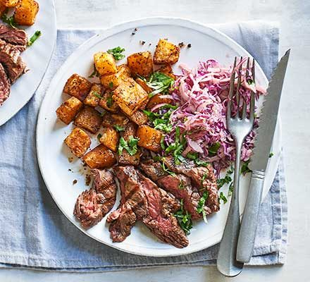

Smoky steak with Cajun potatoes & spicy slaw

Description
Bold, flavorful, and packed with heat, this Smoky Steak with Cajun Potatoes & Spicy Slaw is the perfect meal for lovers of grilled meat and zesty sides. The tender, smoky steak pairs beautifully with crispy roasted Cajun-spiced potatoes and a crunchy, colorful slaw that adds a spicy, tangy punch. Ideal for a summer cookout, weekend dinner, or a hearty meal anytime you're craving comfort with a kick.
Prep & Cook Time:
- Prep Time: 15mins
- Cook Time: 25-30mins
- Total Time: 40-45mins
- Servings: 2
👇 Start your flavor journey with our Smoky Steak with Cajun Potatoes & Spicy Slaw recipe below!
Ingredients
- 2 tbsp olive oil
- ¼ small bunch of coriander, finely chopped
- ½ tbsp chipotle chilli paste
- 430g Maris Piper potatoes
- ¼ small red cabbage, shredded
- 2 tbsp mayonnaise
- 1 tbsp Cajun seasoning
- 1 x 400g bavette steak
- ½ red onion, finely sliced
- 1 tbsp soured cream
- Cut into 1.5cm chunks
Smoky Steak with Cajun Potatoes & Spicy Slaw Step-by-Step Instructions see below:
Instructions
- Roast the Cajun Potatoes
Preheat your oven to 200°C (180°C fan) / 400°F / Gas 6.
In a bowl, toss the potato chunks with Cajun seasoning and 1 tbsp olive oil.
Spread them out on a lined baking tray and roast for 25–30 minutes, turning halfway through, until golden and crisp.
- Make the Spicy Slaw
In a large bowl, combine shredded red cabbage and finely sliced red onion.
In a smaller bowl, mix mayonnaise, soured cream, and chipotle chilli paste.
Pour the dressing over the vegetables and mix well. Season with salt and pepper to taste.
Chill in the fridge while you cook the steak.
- Cook the Steak
Pat the bavette steak dry with kitchen paper. Rub with 1 tbsp olive oil and season generously with salt and pepper.
Heat a heavy-bottomed frying pan or grill pan over high heat until very hot.
Sear the steak for about 3–4 minutes per side for medium-rare, or adjust according to your preferred doneness.
Remove from heat and let rest for 5–7 minutes before slicing against the grain.
- Serve
Arrange the crispy Cajun potatoes and spicy slaw on each plate.
Slice the rested steak and place it alongside.
Sprinkle with freshly chopped coriander for a burst of freshness.
Thats a Wrap!
You've just mastered a bold and satisfying plate of Smoky Steak with Cajun Potatoes & Spicy Slaw — a dish full of texture, flavor, and flair. The tender, juicy steak paired with crispy, seasoned potatoes and that creamy, fiery slaw? Pure perfection.
Whether you're serving this up for a laid-back dinner or showing off at your next gathering, it's a guaranteed crowd-pleaser. Don’t forget a squeeze of lime and a sprinkle of fresh coriander to finish it off like a pro.
🥩 Steak night just got an upgrade — smoky, spicy, and seriously delicious.
Love this recipe? Share it, tag it, or save it for later — and stay tuned for more flavor-packed meals!
Back to Home